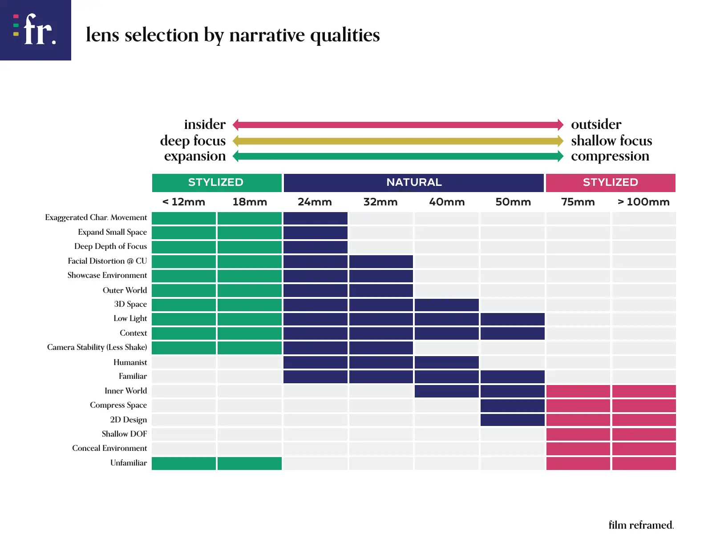

跳到导演选用指南
Skip to director choices
F / L
电影学习
Film Learning
故事
Story
摄影
Image
构图
Composition
中英
中文
English
原始 PDF · Original PDF
Lens Selection by Narrative Qualities · 1 页 / pages

第 1 页 / Page 1
请启用 JavaScript。 / Please enable JavaScript.